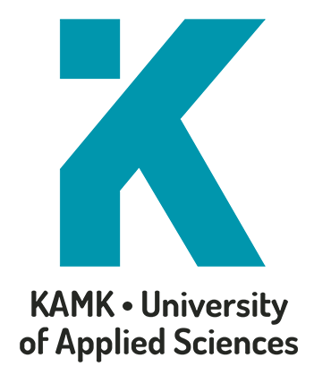
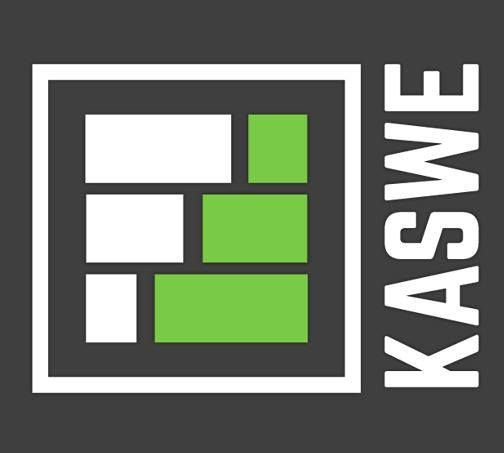
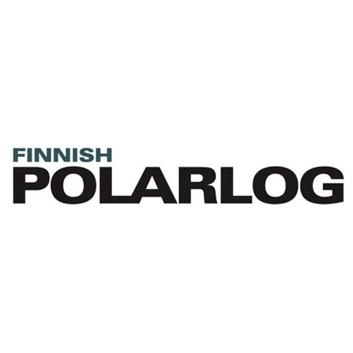

Timo Karppanen

09/2017 - 06/2021
Tieto-ja viestintätekniikan insinööri, Kajaanin ammattikorkeakoulu
Tieto ja viestintätekniikan koulutus, suuntautumispuoli Älykkäät Järjestelmät. "Älykkäät Järjestelmät -koulutuksessa erikoistutaan laitesuunnitteluun ja laiteläheiseen ohjelmointiin. Opintojen pääpaino on älykkäiden järjestelmien elektroniikan, tietoliikenteen, tietokantojen ja käyttöliittymien suunnittelussa ja toteutuksessa.
Työharjoittelu

01/2020 - 06/2020
Suoritin keväällä 2020 työharjoittelun Kaswe Oy:ssä.
Työtehtäviin kuului
Verkko-ohjelmointi, verkkosivujen suunnittelu, API suunnittelu
ja ohjelmointi.
Vue.js
Wordpress
PHP
Divi
HTML5
CSS
Käytetyt teknologiat:
Vue.js
Wordpress
PHP
Divi
HTML5
CSS
08/2013 - 06/2016
Teknisen suunnittelun perustutkinto, OSAO Kempeleen-Limingan yksikkö
"Suunnitteluassistentin perustutkinnon suorittaneen työtehtävät liittyvät teknisen suunnittelun mallintamiseen, tuotemallien yhdistelyyn ja siirtämiseen, piirustusten ja dokumenttien tuottamiseen ja ylläpitämiseen, erilaisten suunnitteluun liittyvien julkaisujen tekemiseen sekä tuotteiden markkinointiin ja mainontaan nykyteknologian tarjoamin keinoin."
Työharjoittelu

01/2016 - 06/2016
Suoritin keväällä 2016 työharjoittelun Finnish Polarlog Oy:ssä
Työtehtäviin kuului
Autotallien, katoksien sekä pienien mökkien 3D-mallinnus
ArchiCAD
Käytetyt teknologiat:
ArchiCAD